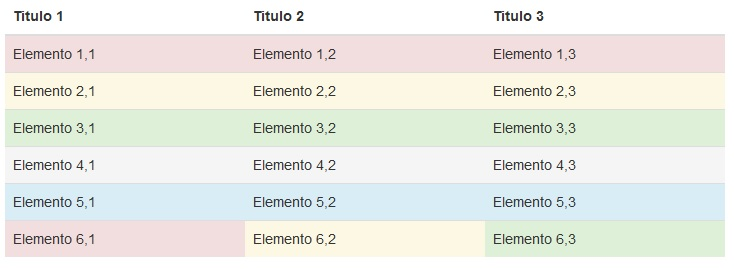

Bootstrap propone una serie de clases con un determinado color que sirve para indicar: peligro, cuidado, éxito etc:
.danger Indica un peligro .warning Advertencia .success Acción exitosa .active Color de desplazamiento del ratón a una fila o celda específicas .info Indica un acción informativos neutrales
Veamos una tabla asignando estas clases a filas y celdas de una tabla:
<!DOCTYPE html>
<html>
<head>
<title>Prueba de Bootstrap</title>
<link href="css/bootstrap.min.css" rel="stylesheet">
<meta name="viewport" content="width=device-width, initial-scale=1">
</head>
<body>
<div class="container">
<table class="table">
<thead>
<tr>
<th>Titulo 1</th>
<th>Titulo 2</th>
<th>Titulo 3</th>
</tr>
</thead>
<tbody>
<tr class="danger">
<td>Elemento 1,1</td>
<td>Elemento 1,2</td>
<td>Elemento 1,3</td>
</tr>
<tr class="warning">
<td>Elemento 2,1</td>
<td>Elemento 2,2</td>
<td>Elemento 2,3</td>
</tr>
<tr class="success">
<td>Elemento 3,1</td>
<td>Elemento 3,2</td>
<td>Elemento 3,3</td>
</tr>
<tr class="active">
<td>Elemento 4,1</td>
<td>Elemento 4,2</td>
<td>Elemento 4,3</td>
</tr>
<tr class="info">
<td>Elemento 5,1</td>
<td>Elemento 5,2</td>
<td>Elemento 5,3</td>
</tr>
<tr>
<td class="danger">Elemento 6,1</td>
<td class="warning">Elemento 6,2</td>
<td class="success">Elemento 6,3</td>
</tr>
</tbody>
</table>
</div>
</body>
</html>
Luego tenemos como resultado colores distintos en cada fila y la última fila las celdas con distintos colores:
La idea de utilizar estas clases es ser consistente en nuestro sitio cuando indicamos: peligro, cuidado, éxito etc. y si además utilizamos los que propone Bootstrap muchos sitios de internet serán consistentes con este juego de colores y el usuario comprenderá más rápido la dinámica del sitio web.